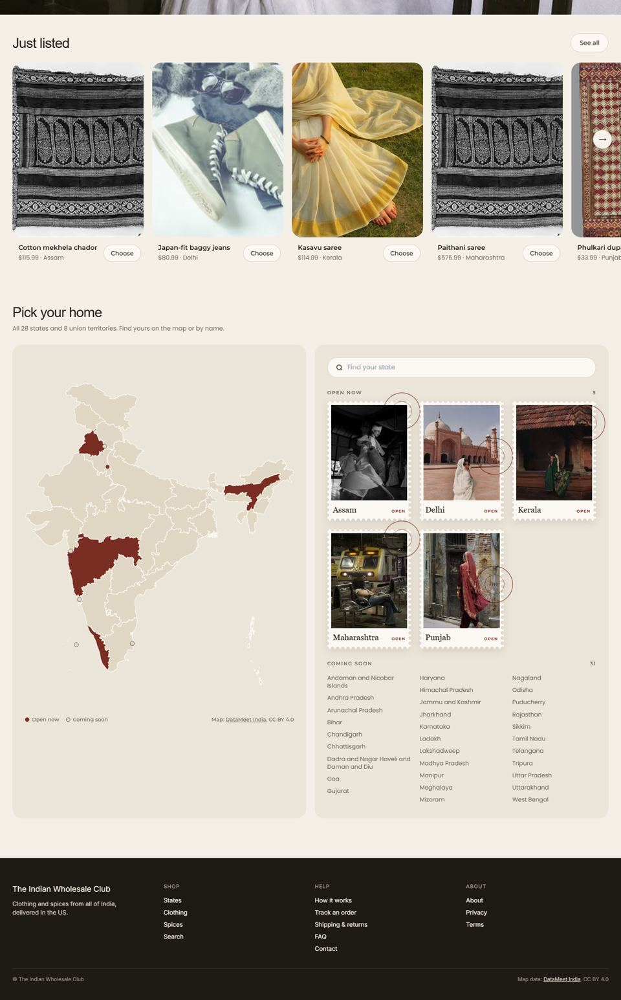
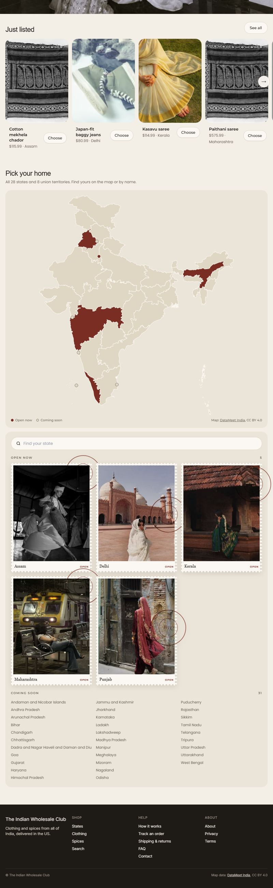
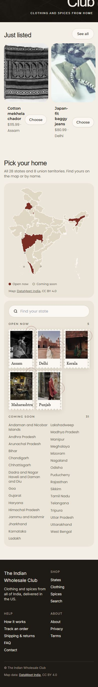

Today (production, 2026-10-08, below the hero): open to compare



Website · the whole Home, scroll inside the frame
The header on the photo is as today: white links over a dark band, and a smooth fade to cream once the photo has passed. Below the photo everything is today's layout in Cinzel + Karla; the one change is the round + on each card's photo, so the name keeps the card's full width. Hover a state's name for 0.7 s to light it on the map; type in "Find your state" to filter.
Pick your home with more than 6 open states (sample: 12)
Up to 6 open states the stamps sit as they are now. From 7 on they come in pages of 6 with an arrow on each side; the pages slide with a smooth scroll, and each arrow hides at its end. Sample states marked by placeholder photos.